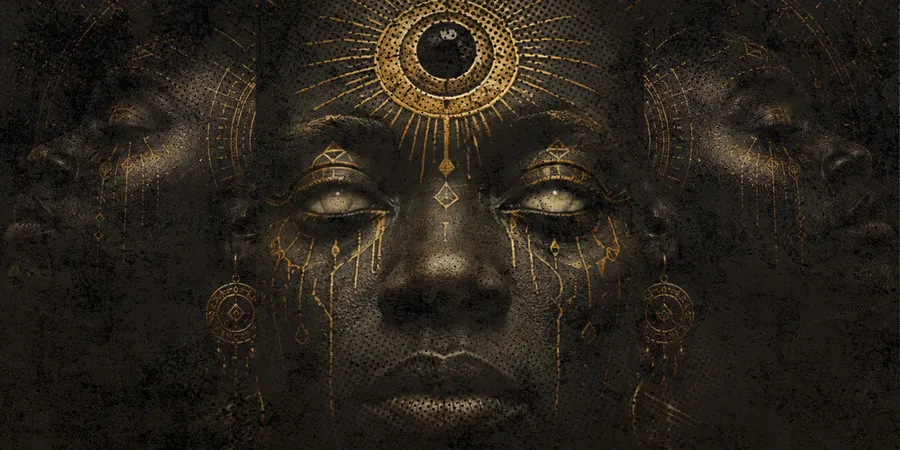

Exhibition | 2026
Identity & Spirituality
Eight physical artworks and two mixed reality installations exploring ancestry, memory and cultural identity through illustration, sound and augmented reality.
View Exhibition DocumentationFor Critics, Editors and Curators
A documented introduction to an interdisciplinary visual arts practice spanning exhibitions, illustration, moving image, sound and augmented reality.
Artist Overview
Thomas Ogun is an interdisciplinary visual artist whose practice explores identity, spirituality, ancestry and cultural memory through illustration, moving image, sound and augmented reality.
Traditional drawing and digital image-making form the visual foundation of the work. Film, sound and interactive technology extend the narrative beyond the physical image and create new forms of audience engagement.
His developing body of work brings together exhibitions, collaborative projects and public-facing digital experiences rooted in contemporary African culture and open to international exchange.
Selected Projects
Each project includes authorship, process, public presentation and supporting documentation.

Exhibition | 2026
Eight physical artworks and two mixed reality installations exploring ancestry, memory and cultural identity through illustration, sound and augmented reality.
View Exhibition Documentation
Moving Image & Creative Direction | Nigeria and South Africa
A cross-border music and release campaign led from treatment through filming, post-production and rollout. Thomas Ogun served as Creative Director, Project Manager and Editor.
Read the Case StudyCreative Technology Research
An artist-built creative thinking platform for turning early ideas into structured prompts, plans and production-ready materials.
Explore Aura ManagerReview Materials
Use these materials for background research. Please confirm final credits and reproduction permissions with the studio before publication.
Critical Context
How personal memory and inherited cultural narratives shape identity across generations.
How augmented reality can deepen an encounter with physical artwork without replacing it.
How drawing, cinematography and editing share a visual language of composition, rhythm and emotional focus.
How one visual system can connect distinct locations while allowing each place to retain its character.
Publication Details
Reviews, Interviews and Exhibitions
For critical reviews, curatorial conversations, screenings and image permissions, contact the studio with the publication, intended use and deadline.